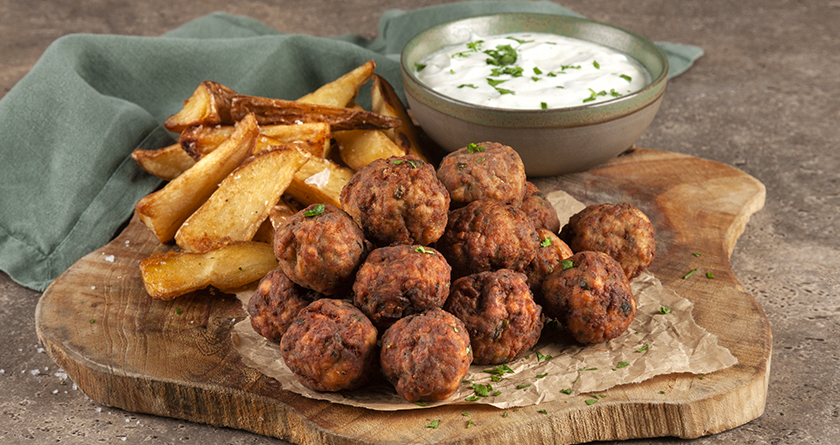

Flavorful, fluffy, and tender, keftedakia are Greek meatballs made from a combination of ground pork and beef, eggs, stale bread or breadcrumbs, and seasonings such as dill, pepper, parsley, and oregano. Their round shape makes them ideal for popular Greek picnics where keftedakia are consumed as snacks, but the meatballs can also be consumed as appetizers.
Meal prep time : 30 minutes
Servings : 20